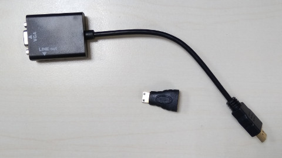
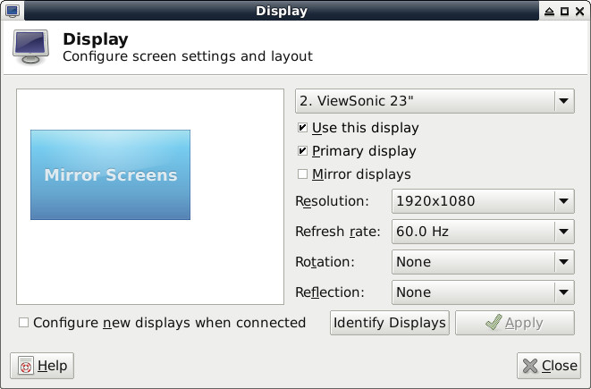
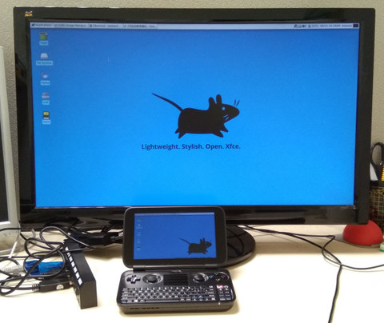

Steward
分享是一種喜悅、更是一種幸福
掌機 - GPD Win 上蓋鋁合金版 - Mini HDMI輸出
司徒目前都是使用GPD Win當作輔助電腦，也慢慢適應在這台機器上面編輯網站，因為司徒最喜愛的機器就是可以帶著跑，可以在捷運上面寫寫程式或者編輯網站，回家後，又可以在床上打打電動，而在公司的時候，也可以利用它當作輔助電腦，所以GPD Win蠻符合以上這些條件，而剛好GPD Win又有Mini HDMI輸出，因此，司徒使用一個Mini HDMI轉VGA，把畫面輸出到更大的螢幕使用，然後使用USB Hub連接滑鼠跟鍵盤，打造一個適合GPD Win的環境，而司徒購買的HDMI轉VGA如下：

P.S.還需要一個Mini HDMI公頭轉HDMI母頭
Mini HDMI可以輸出1920x1080解析度

